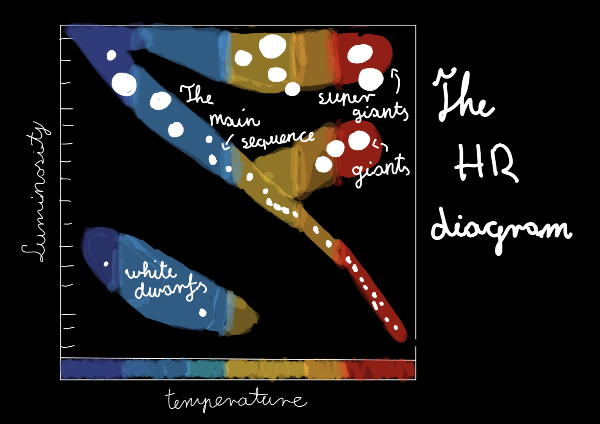
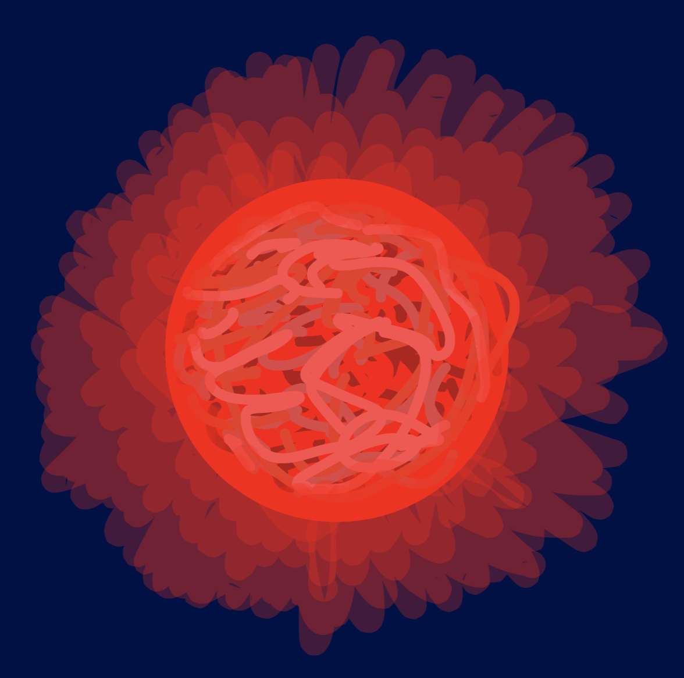
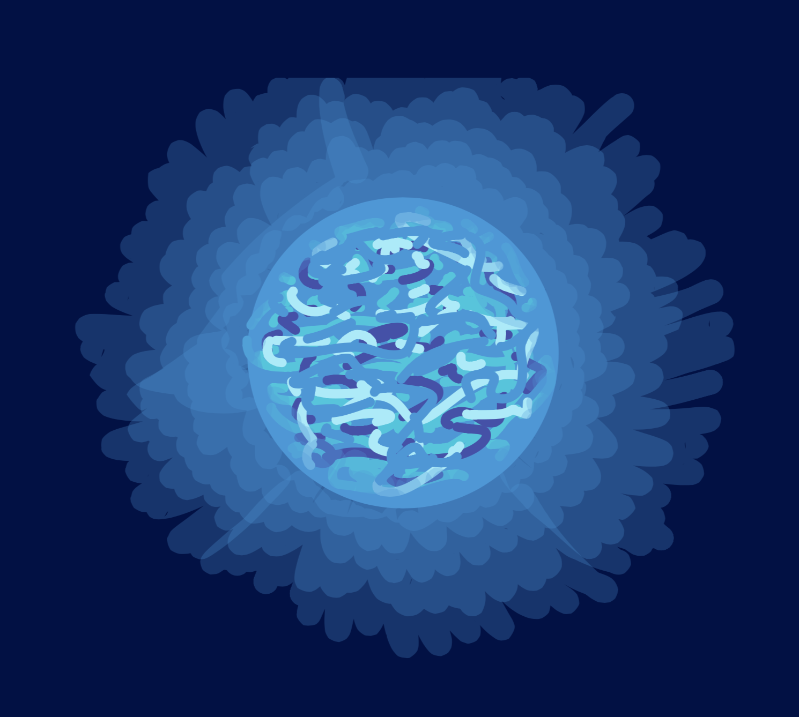
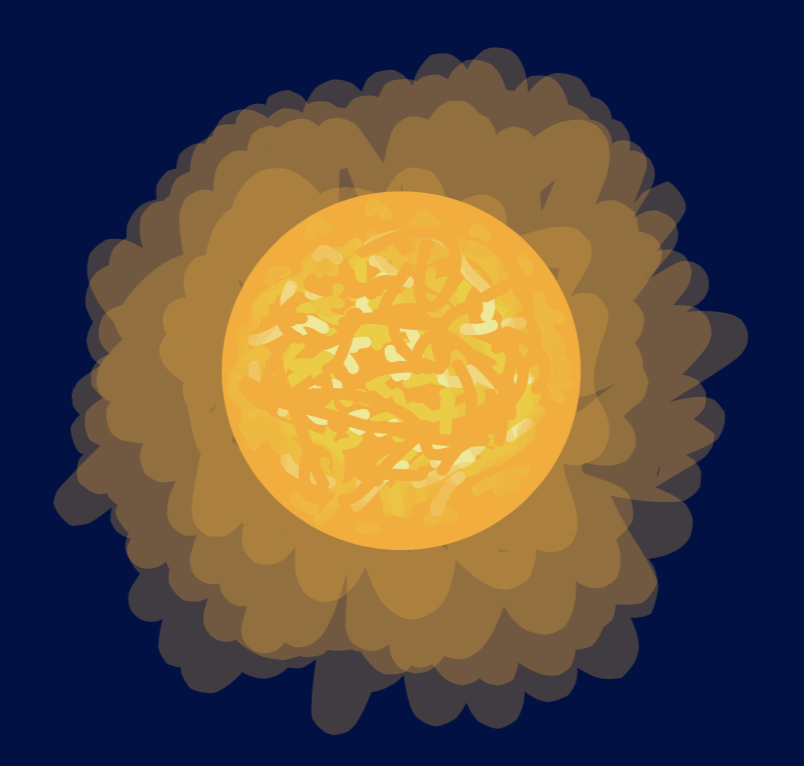

From previous posts we learned about the beginning of our universe, what it is made of and the main force, gravity, that governs it. What can we find in our universe? Well the first objects in the universe were the very ones which lit it up...

What makes a star a star?
The main difference is that stars emit light when planets and other objects don't. But how do they emit light? They emit light because they have fusion inside their core. So ermmm... how does that work? A star is mainly composed of hydrogen. So when the star gains enough mass the nuclei of hydrogen atoms are experiencing so much pressure that they fuse into a heavier element, which is called hellium. And every time that happens there is a little bit of energy created that is converted into photons which then travel, from the star's core, for a long time to the star's surface and then further into space.

How do we know a lot about stars?

Spectra is the light that stars emit and it si when you divide the incoming light from an object into individual colors or wavelengths .
How does spectra look like?
As seen in the picture above spectra consists of all the colors of the rainbow and black lines.
What are those black lines?
Stars emit two different kinds of spectra: The constant spectra (rainbow colors) and every star has an atmosphere, and it contains elements and those elements absorb the light from the spectra, thus causing the dark gaps. And with the help of those dark gaps we can determine a stars composition.
How do we organize all that data?
- In the 1800 scientists classified stars by their hydrogen supply. Then in 1901. a briliant spectroscopist Annie Jump Cannon merged and dropped a few of the old classifications and created a new system by more than one element's supply.
- Max Planck, father of Quantom mechanics proved that atoms glow at different colors beacuse of temperature.
- In the end Cecelia Payne Gaposchkin put all the pieces together and formulated a new way of classificating stars: by their temperature.
- The current letters of classification of stars are: O, B, A, F, G, K, M. Including 10 subnumbers according to temperature. Our star is a G2 star, where G is a range of temperature and 2 is in that range a smaller unit providing percision.
But that's alot of data.
So what do you do with all that data?
You make a graph! An HR graph in this case:
In the diagram we have temperature over luminosity (how much energy the star releases) . The blue side of the diagram shows the hottest temperatures while the red side of the diagram shows the coolest temperatures (pretty weird, right!?) As you can see on the diagram, there are three clusters and a diagonal line across. The first cluster, in the bottom-left corner is called White Dwarfs. Those stars are exposed cores of a star, like our Sun when they reach the end of their life.

The second cluster, on the right side is called Giants. Here are stars that have a lot more mass than our Sun.
The third cluster is called Super Giants in the top right corner. Those are stars that are way more massive and hotter than our Sun, and end their lives with amazing explosions and black holes.
And the diagonal line is called the Main Sequence. Here is our Sun among the lower mass end of it. In the main sequence fall the lower mass stars and the middle mass stars like our Sun, but with differences in their temperature. Most stars fall into the Main Sequence.
This diagram is one of the most important diagram in astronomy!
Why?
Because every star we find, we can determine where it belongs in the diagram, and have all the stars in the universe in our grasp...